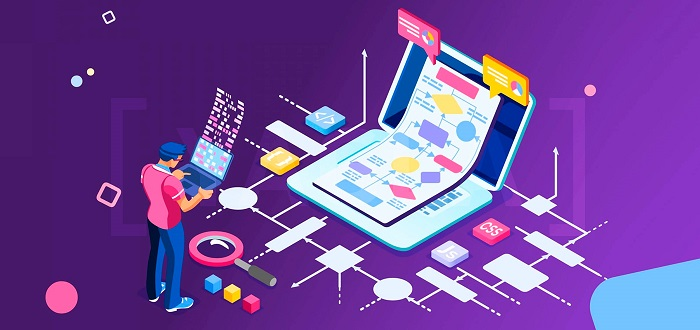

Практические советы по улучшению юзабилити лендингов
Что такое юзабилити лендинга
Юзабилити и юзабилити лендинга – это не одно и то же. Юзабилити – это общий термин, который описывает удобство использования веб-ресурсов. Чаще всего это какие-то крупные интернет-порталы интернет-магазины с множеством различных функций.
Юзабилити лендинга более специфично, фокусируется на создании удобного пользовательского опыта на лендинге. Лично я еще и применяю маркетинг.
Лендинги чаще всего разработаны для достижения той или иной маркетинговой цели, например, получить контакт клиента или продать товар.
Топ-4 ошибки юзабилити сайта
На самом деле, этих ошибок намного больше, я отобрала самые распространенные ошибки в дизайне, которые могут снизить эффективность лендинга.
Как выбрать дизайн для лендинга и не пожалеть?
Самая основная проблема, с которой мы частенько сталкиваемся: к нам приходят клиенты, которые говорят, что им нужен сайт, как у Apple. Т.е. очень краткое техническое задание, которое сложно распознать дизайнерам, сложно вообще понять, что требуется от сайта и разработки.
Отсюда вытекает следующая проблема, что мы не знаем, как нам правильно составить задачу дизайнеру и в принципе подобрать дизайн, который будет подходить для нас, нашей компании и нашего бизнеса.
Текущая ситуация: вы делаете, сделали или занимаетесь разработкой нового сайта, переделываете старый. И есть такое чувство, что дизайн идет как-то не по плану. Кажется, что что-то не так. И это «что-то не так» может выражаться в том, что у вас, как у компании, маркетолога или предпринимателя просто сложилось свое положение дел, вы и так прекрасно понимаете, как нужно создавать лендинги, какое на них должно быть наполнение. Но ваше понимание того, как это должно выглядеть, немного приелось, и я хочу вам помочь выйти на новый курс, который поможет вам немного поменять точку зрения.
Какие инструменты использовать
И для этого мы будем расти в сознании и понимании, улучшать себя, используя специальные инструменты.
Как сделать портфолио дизайнера: разбираем на примерах и даём советы начинающим
Портфолио — лицо специалиста. В нём отражается насмотренность, знание трендов, интерес к своему делу, опыт работы с инструментарием и другие качества. Сегодня расскажем, как сделать портфолио веб-дизайнеру, чтобы даже новичку было что показать работодателю.
Разобраться в теме нам поможет Татьяна Круглик, специалист из образовательного проекта TutorOnline.
Как работает портфолио
Помните: портфолио собирают не для себя. Нередко со страницей будут взаимодействовать HR-специалисты или потенциальные заказчики — люди, которые мало понимают в дизайне. Вокруг этого факта выстраивается структура, от базовых разделов до мелочей. Вы должны управлять вниманием клиента: в конце концов, портфолио это такой же проект.
Типографика: основы и правила для создания понятного и эффективного сайта
Создатель сайта может без объяснений показать юзеру где читать, что смотреть, куда нажать и как купить. Всё это делается при помощи типографики и вёрстки в веб-дизайне. Как использовать типографику для своих целей и получить вовлечённость пользователя на максимум — читайте в нашей статье.
Что такое типографика и вёрстка
Изначально типографика относилась только к печатным изданиям и графическому дизайну. Но чем больше материалов попадало в сеть — тем быстрее понятие распространялось в сфере создания сайтов. Сейчас большинство под «Типографикой» понимают совокупность правил для создания страниц. Визуальное оформление отвечает за общее впечатление от текста и вложенных смыслов. Понятие «вёрстка» тоже прошло долгий путь и переросло из «создание макета на печать» в «создание сайта».
Прежде чем создать сайт для пользователя и завоевать его внимание — разберёмся в терминах.
Типографика — это свод правил по оформлению текста для удобства пользователя. Чтобы каждый нашёл нужную идею, быстро её прочёл, при желании задержался и насладился визуальной концепцией ресурса.
Вёрстка — это структурирование текста и всех сопровождающих его элементов в макете страницы, газетной полосы, книги и других печатных или электронных текстовых материалов. Важно понимать при этом, что вёрстка создаёт типографику.
Как связаны дизайн и конверсия сайта: неожиданные открытия
Красивая картинка продает? Если отвечать не задумываясь – да. Вроде бы всё логично: на неё приятно смотреть, значит, она будет мотивировать. Однако если речь идет о дизайне посадочной страницы, не всё так однозначно.
Нет универсальных рекомендаций по тому, как должен выглядеть сайт, чтобы генерировать заявки. Более того, практика показывает, что иногда чем «ужаснее» сайт, тем лучше он конвертит.
Разберемся в этом статье, есть ли связь между конверсией и дизайном, и если есть – какая.
Первое впечатление о сайте обманчиво
У многих специалистов из digital за годы опыта в голове сложился некий шаблон «идеального» сайта. И предубеждение, что продающая страница должна выглядеть «именно так, а не иначе», в противном случае она не будет давать результат.
Однако не спешите разносить в пух и прах страшненький сайт, а поинтересуйтесь, какова его конверсия. Часто ответ на этот вопрос разрывает все шаблоны.

Как сделать прототип лендинга
Уже на этапе технического задания по созданию посадочной страницы нужно представлять, как она будет выглядеть, что и где будет располагаться. Быстрый и простой способ отразить свое видение будущего лендинга – сделать прототип.
Прототип лендинга – это макет, или эскиз интерфейса. Его можно набросать от руки на бумаге или отрисовать в специализированном сервисе. Цель – чтобы дизайнеры знали, под какой контент отрисовывать элементы страницы, и учитывали все ваши «хотелки».
В этой статье мы не будем углубляться в технические подробности, а выясним, что именно показать в заголовке, подзаголовке и других элементах интерфейса, в каком порядке их располагать. И покажем всё это на примерах.
Нельзя просто взять и сверстать сайт сразу?!
На разработку дизайна всегда уходит уйма времени. Причем не столько на работу самого дизайнера или агентства. Хотя и её может быть много.
Взять хотя бы тот факт, что для мобайла и десктопа нужна разная верстка из-за технических различий. Чтобы создать эффективный пользовательский опыт для аудитории на всех устройствах, прототипов нужно несколько.
Самый сложный этап, съедающий много времени и усилий – это согласование, как сайт должен выглядеть. Обе стороны обмениваются своими знаниями: заказчик посвящает веб-дизайнера в тему продукта, дизайнер технически оценивает, реально ли технически воплотить конкретные идеи по интерфейсу и предлагает возможные варианты.